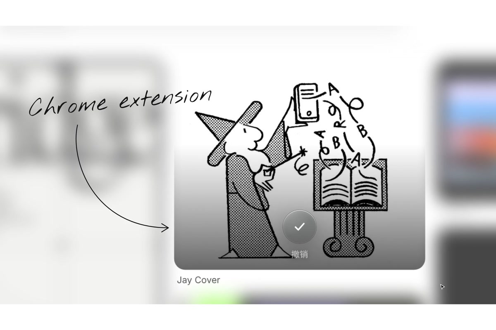
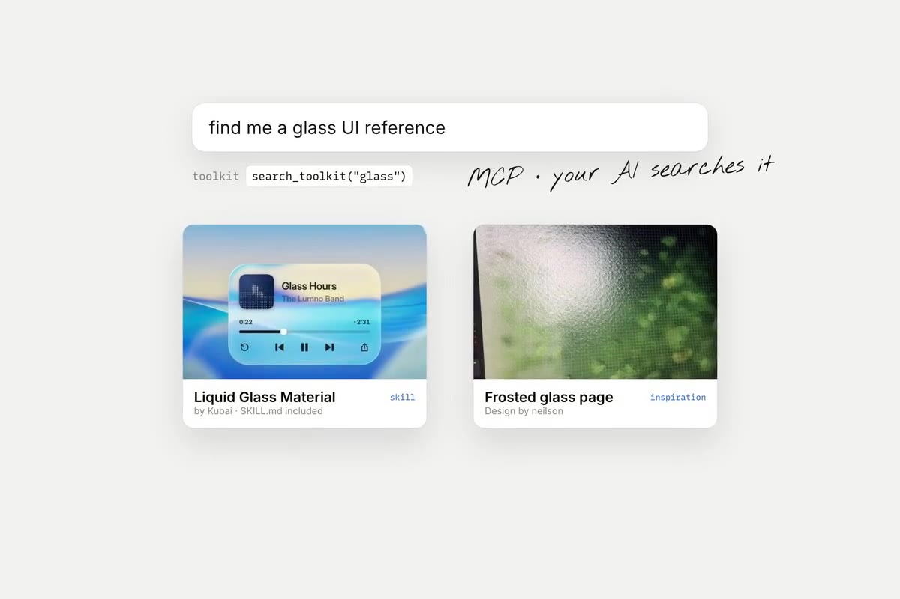
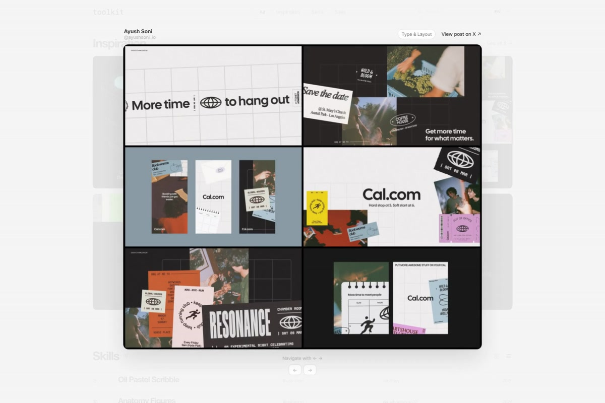

A website for the design things I collect: inspiration, AI skills, and designers' sites. Every item links back to where it came from. I can add to it from any website with a Chrome extension, and AI tools can search it through MCP.

01 · Chrome extensionSee an image you like on Pinterest or X? Right-click it and choose "Add to toolkit". About a minute later it's on the site, with a link to the original post.

02 · MCP serverConnect toolkit to Claude or another AI tool. Ask for "a glass UI reference" and you get the matching images and links. Ask for a skill and you can use it right away.

03 · BrowsingInspiration reads like a feed. Click a piece to see it large, then jump to the original post. Every page works in English and Chinese.